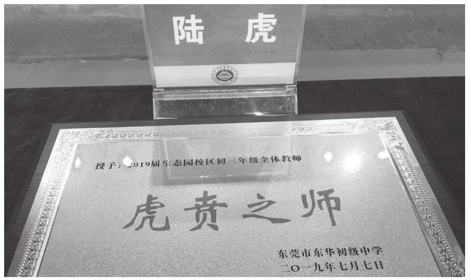

校园文化活动是校园文化的一部分，是以学校的师生作为主体开展的一系列丰富多彩的活动，它充分利用各种载体，陶冶情操，使学生从中受到教育和启发，并内化为自觉的行动。它借助学生的课余文化活动对学生进行思想道德方面潜移默化的影响，锻炼其各方面的能力，提高他们的道德情操和审美情趣。[书ji分 享V 信shufoufou]
我曾经规划过初中三年六个学期的校园文化活动，按照“放、归、收”的思路，围绕“行、智、远”的目标，以校园文化活动为载体，将德育融入丰富多彩的活动之中。初一年级上学期开展“百·千·万”教育活动，初一年级下学期开展“十节育人”系列活动，初二年级上学期开展“八和聚力”工程，初二下学期开展“三规·四促·五提升”系列活动，初三上学期开展“造梦工程”，初三下学期开展“圆梦计划”。
初一上学期的“百·千·万”教育活动，“百”，即师生广泛参与的、以学生社团为载体的“百团大战”；“千”，即围绕学生核心素养提升、淬炼学生书写能力的“千人书法大赛”；“万”，即旨在弘扬文化传承经典、以国学教育为宗旨的“万声齐诵国学经典”。
开学初，学校团委向全体师生发出了自建自创校园社团的倡议，同时也号召广大同学积极加入学生会，参与到学校的自主管理、特色管理、创新管理活动之中。经过近一个学期的活动，韩舞社、棋乐社、话剧社、英语俱乐部、校园电视台、校园广播站、志愿服务队、学校礼仪队、生态读书会、校园啦啦队、吉他社、器乐队、国旗班等学生社团如雨后春笋般涌现，并在校园文化活动中闪亮登场。学生会主席竞选将本学期百团大战推向高潮。学生会主席竞选从倡议、报名、海选、面试、笔试、考核、宣讲、竞选等环节，历时三个月，候选人通过选战宣讲、网络投票、竞选演讲、才艺展示、现场问答等环节，家长代表、教师代表、学生代表一起选出了大家心中的学生会主席。
为了提升学子书法水平，淬炼核心素养，强化自身素质，从学生入学开始，就花大力气、下大功夫培养学子书写、书法水平。从书法校本课程的开设到每天书法练习的检查落实，从班级的书法等级考试到级组优秀书法作品的展览，从“贺庆典”“迎国庆”“迎新年”等书法作品比赛到每月一次的全年级书法等级评定，学校将提升学生书法素养作为一项长期的重点工程来落实。千人书法大赛是在整个课程设置的基础上，隆重推出的一场书法展演活动。参加现场书法展示的师生们，硬笔软笔齐上阵，楷书行书竞风流。真可谓：琴棋书画修涵养，笔墨纸砚展风流；行楷隶篆见功夫，书法艺术耀长空。
学校设置了每日午前经典诵读课程，语文科组设计诵读内容、团委学生会督促落实、年级组织考评量化，学生在经典诵读中，提升文学素养，提高文化涵养，提振精神气质。“万声齐诵国学经典”是对整个学期国学教育的一次展演，家长方阵、教师方阵、基层干部方阵、级组学生方阵……个个别致，处处精彩；秉承民族文化传统，博采时尚艺术精髓。丝丝管弦，演不尽古风的流光溢彩；悠悠书声，诵不完古韵的悠扬铿锵。打造书香校园，让书香校园文化也成为学校发展的灵魂和强大引擎。
初一下学期的“十节育人”系列活动，就是以校园文化节、传统文化节为载体，即社团文化节、生态音乐节、宿舍文化节、体育节、读书节、科技节、清明节、植树节、元宵节、青年节等，以“让每一个上进的学生都能找到成就感”为活动目标，挖掘教育内涵，拓宽教育形式，调动教育资源，激发教育内核，淬炼学生核心素养，培养学生国际视野。
元宵节，升级开学礼，让开学礼成为学生求学生涯中的重要节日，打造了高端大气、喜庆融融、悦心走心的开学礼。宿舍文化节，打造家文化、暖文化，安全逃生演练、内务大比拼、我的宿舍我美化、“我的好舍友”征文大赛等，师生用心、家校携手，共同将宿舍营造成学生的另一个家。体育节，提升凝聚力、向心力，关注学生身体健康，强壮学生体魄，以校园特色体操、篮球联赛、足球联赛、乒乓球比赛、羽毛球比赛、排球比赛等，人人参与其中，通过激烈的比赛和形式多样的参与模式，活跃了校园文化生活，增加了班级凝聚力，打造体育特色学校。音乐节，陶冶情操、润泽心灵，通过班级合唱比赛，歌王争霸赛、器乐之王争霸赛、舞林盟主争霸赛，学生全员参与、基层海选、舞台争霸，用艺术熏陶心灵，用才华筑梦人生。读书节，用阅读风雅人生，将“书香校园”与“书香家庭”紧紧相连，为期一个月的主题阅读，举行“阅读——生命飞翔的羽翼”主题阅读月汇报展演活动。科技节，点燃创新智慧，融学科科学素养的科学秀展演、航模表演、水火箭制作飞行表演、科技作品展、参观《新能源图片展》、科技讲座……充分挖掘学科内涵、突出科学精神，培养创新精神，扬起理想的风帆，踏上追寻科技的征程，悟科学、爱科学，尝试自制小科技、小发明，积极探寻科学技术，点燃发明创新的导火线。青年节，磨砺意志、砥砺成长，以“青春不畏远，生态踏歌行”远足拉练活动、学生干部励志营拓展活动、大型励志感恩讲座活动等为载体，使学生们有勇气、有信心肩负起改善家园、回报社会、建设祖国的重任。社团文化节，拓展学生思维、培育国际视野，陶艺社、吉他社、羽毛球协会、志愿者协会、韩舞社、校园广播电视台、合唱团、舞蹈社、魔方战队、辩论争霸赛、英语话剧表演、模拟联合国大会等，将社团比拼推向高潮。清明节，缅怀先烈扬正气。植树节，绿色人生健康成长。
初二年级上学期的“八和聚力”，和多方之力，和多样之才，和多元之智，和谐发展，和衷共济，追求校园之“和”、管理之“和”、家校之“和”、身心之“和”、师师之“和”、师生之“和”、生生之“和”、教学之“和”。八和聚力旨在规范教学行为、规范生活细节、规范管理日常、规范学习习惯，多元评价促进学生全面发展。
初二年级下学期的“三规·四促·五提升”系列活动，“三规”指的是规范管理的科学有序、规范教师的课堂教学、规范学生的行为习惯；“四促”指的是促进家庭教育的自然生长、促进教师队伍的专业提升、促进学生群体的身心和谐、促进校园文化的品质提升；“五提升”指的是提升学生学习的广度、提升教师研修的深度、提升社会德育的宽度、提升家长委员的效度、提升师生关系的融度。
初三年级上学期的造梦工程和下学期的圆梦计划，都是围绕一个“梦”字展开，就是通过主题式的教育活动，点燃学生内驱力，以理想教育、生涯教育、励志教育为主线，引导学生科学备战中考、合理规划未来发展、找准奋斗着力点。
三年的校园文化活动规划，初一着力用趣味式的异彩纷呈的校园文化活动，让学生绽放天性、喜欢校园，注重学生的行为与习惯。初二着力于精品式的校园文化活动，逐步指向学生心灵，慢慢导向管理，注重学生的心智与思想。初三着力于主题式的校园文化活动，指向学生的理想、未来、远方，校园文化活动的节奏逐步收紧，注重学生的内驱与梦想。
三年的校园文化活动规划，与学生的中考备考、初升高录取和未来发展相得益彰。以我作为德育负责人和年级主任的2019届“虎贲之师”中考成绩为例，“六大强音”，奏响最美乐章。
强音一：面向全体，均分独秀。
东华初中2019届中考，生态园校区60个班、3300多毕业生，以总均分703.1分，高居全市第一名。
强音二：两率耀眼，全面突破。
优秀率、合格率闪耀莞邑，两率均居全市榜首，优秀率90.72%，合格率达99.49%。
强音三：独占鳌头，强势夺魁。
特优生人数遥遥领先，人才方阵集体亮相。东莞市总分前50名我校有40多人，总分前100名我校有90多人。其中，腾佳一以总分773夺得东莞市总分状元（含加分）；刘珈瑜以裸分772夺得东莞市裸分状元；同时，还有4689人次获得单科满分状元，各单科状元均花开校园。
强音四：群星璀璨，精英荟萃。
高分段人数直指云霄，强势领先。760分以上33人，750分以上209人，740分以上600人，730分以上1198人，720分以上1900人，高分人数占学校考生总人数近55%。
强音五：学科争艳，齐头并进。
十大中考学科齐头并进，竞芳争艳。其中，生态园校区语文、数学、英语、物理、化学、道德与法治、历史、体育、地理、生物十大中考学科全部斩获东莞市第一。
强音六：奥赛扬威，学子凯旋。
在第24届全国信息学（程序设计）奥林匹克分区联赛中，派出的28名初三学子，获高中组全国二等奖1名，获全国一等奖5名，全国二等奖20名，全国三等奖1名，获奖人数雄居东莞市第一。
我始终相信，活力十足的校园必定培养出动力十足的少年。

作者倾力打造的师生团队，在校园文化活动和中考成绩上大放异彩，被授予“虎贲之师”称号